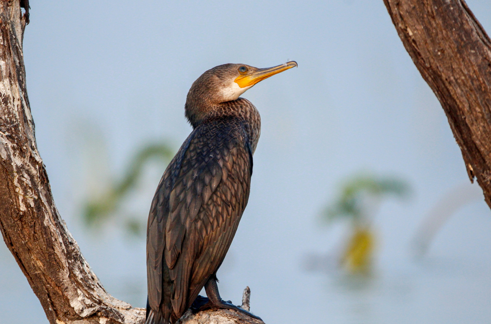

La admiración del mundo se centra en la fauna de las Islas Galápagos,
debido a las condiciones endémicas (82% de los mamíferos, el 80% de las aves terrestres,
el 26% de las aves marinas y el 95% de los reptiles son endémicos de las islas).
La fauna de Galápagos tiene sus ancestros en el continente y tuvieron un proceso evolutivo
de aproximadamente 4 millones de años. Entre las especies endémicas se pueden mencionar
los petreles, los cormoranes, el gavilán de Galápagos, los pingüinos, las iguanas terrestres,
marinas y muchas más.
La fauna de Galápagos tienen una historia muy peculiar que debe ser contada. Cuando los volcanes
de Galápagos comenzaron a formar las primeras islas,
hace entre tres y cinco millones de años, estaban aislados de la vida, separados por unos mil
kilómetros del continente.
pese a ello, con el tiempo un buen número de especies han hecho de las islas su nuevo hogar, debido
a su capacidad de dispersión,
ya sea activa o pasivamente, y a su capacidad de establecerse tras su llegada.
Las Islas Galápagos muchas veces han sido llamadas “laboratorio de la evolución”. Hay muy
pocos lugares en el mundo donde es posible encontrar tanta variedad de especies, tanto vegetales como
animales, que muestren tantos grados de cambios evolutivos en un área tan restringida. . Las islas oceánicas
pueden tener especies que, aunque relacionadas con formas continentales, han evolucionado de manera
diferente a sus parientes debido a su aislamiento en un entorno nuevo y diferente. Este es el factor clave
en la evolución de las islas. No es de extrañar que Charles Darwin quedara tan impresionado por la vida que
encontró en estas islas.
Los pinzones de Darwin son un ejemplo clásico de radiación adaptativa en las aves, que ha servido a
generaciones de biólogos evolutivos. Trece especies evolucionaron dentro del archipiélago de Galápagos a
partir de un ancestro común del continente.
Su fauna única, fruto de un aislamiento geográfico, incluye especies icónicas como las
tortugas gigantes, iguanas marinas, leones marinos, pingüinos y aves endémicas como el cormorán no volador.
Estos animales ofrecen a los visitantes una experiencia única de observación de la vida salvaje, destacando
la extraordinaria adaptación de las especies al entorno insular.
Aquí te dejamos un pequeño resumen de la fauna más importante de las Islas Galápagos:
La palabra endémica se refiere a organismos que no se encuentran en ningún otro lugar del mundo porque evolucionaron y permanecieron aislados en un área determinada y desarrollaron características únicas. Hoy en día encontrará varias especies que entran en esta clasificación en las Islas, las plantas y animales endémicos de Galápagos.